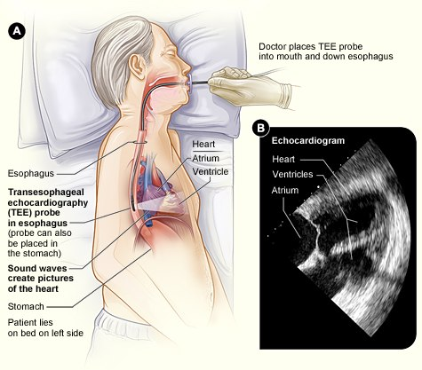

Two atria on top receive the blood. Two ventricles below pump it out.
The right side pumps to the lungs, the left side to the body. The left ventricle has the thickest wall.
Blood flow
Right side, to the lungs: the superior and inferior vena cava, right atrium, tricuspid valve, right ventricle, pulmonic valve, pulmonary artery.
Left side, to the body: the pulmonary veins, left atrium, mitral valve, left ventricle, aortic valve, aorta.
Heart sounds
S1: the tricuspid and mitral valves close, as the ventricles contract.
S2: the pulmonic and aortic valves close, as the ventricles relax.
Conduction system
The SA node, the heart's pacemaker, fires: the atria contract.
The AV node holds the impulse briefly, then passes it down the bundle of His, the right and left bundle branches and the Purkinje fibers: the ventricles contract.
Systole: the ventricles contract and eject the blood. Diastole: they relax and refill.
For further study, see Fundamentals II Week 2 – Cardiovascular.
Perfusion is the heart's job: the passage of fluid through the circulatory or lymphatic system to an organ or tissue. It gets oxygen to the cells, where they do their work. Without perfusion, tissues die.
Term
What It Is
Cardiac output (CO)
The volume of blood pumped by the heart in one minute.
CO = stroke volume × heart rate.
Altered by anything that alters the heart rate, the stroke volume or the contractility.
Blood pressure and heart rate: the indirect measures of cardiac output at the bedside, why vital signs are vital. Measured directly by invasive procedures, in the ICU.
A rising heart rate: when the stroke volume falls, as with a low blood volume, the heart rate goes up to maintain cardiac output. A compensatory mechanism.
Poor perfusion to the brain: dizziness, passing out, confusion.
Poor perfusion to the periphery: pale toes, decreased pulses, sluggish cap refill.
A low pulse pressure: a failing heart without a strong systolic ejection, or hypovolemia.
The percentage of the blood in the left ventricle ejected with each contraction: how effective the pump is. The left ventricle is the powerhouse chamber. Measured by an echo, below.
Reduced
40% or less: heart failure. A weakened heart muscle, as in cardiomyopathy, cannot eject as much as it should. Symptoms may show even at rest. Very low: may need a heart transplant.
Borderline
41 to 49%. Symptoms may show during activity.
Normal
55 to 70%: a little over half the blood with every contraction. Usually comfortable during activity.
Hypertension, Hyperlipidemia and Atherosclerosis
For further study, see Fundamentals II Week 2 – Cardiovascular and Med Surg II Week 1 – Coronary Artery Disease and Acute Coronary Syndrome.
Condition
What It Is
Why It Matters
Hypertension
High blood pressure: the pressure in the arteries is higher than it should be.
Broken into stages. See below.
Often asymptomatic: a silent disease, "the silent killer". It goes unnoticed until complications occur.
Changes the arterial walls, which increases the peripheral vascular resistance (PVR). Over a long time it wears the heart out: heart failure.
Too many lipids in the blood: cholesterol and triglycerides. Both are made in the body and taken in with food. The liver makes cholesterol.
Targets: total cholesterol under 200 mg/dL. LDL, the bad, under 130 mg/dL. HDL, the good, over 45 mg/dL for men and over 55 mg/dL for women.
Forms hard deposits inside the arteries, building up on the arterial walls: atherosclerosis.
Atherosclerosis
Hardening of the arteries: the walls narrow and become less elastic.
Perfusion cannot get past it.
In the heart: coronary artery disease (CAD), a risk for an MI. Atherosclerosis is responsible for almost all CAD.
In the periphery: peripheral arterial disease (PAD), sometimes called PVD.
The Stages of Hypertension
Category
Systolic (mm Hg)
Diastolic (mm Hg)
Normal
Under 120
and under 80
Elevated
120 to 129
and under 80
Stage 1 hypertension
130 to 139
or 80 to 89
Stage 2 hypertension
140 or higher
or 90 or higher
Hypertensive crisis
Higher than 180
and/or higher than 120
Hypertensive crisis: notify the provider immediately, or the patient goes to the emergency room.
Cardiovascular Diagnostics
For further study, see Med Surg II Week 1 – Cardiovascular Labs and Diagnostics and Med Surg II Week 1 – Coronary Artery Disease and Acute Coronary Syndrome.
Echo Versus TEE
Echocardiogram (Echo)
How: sound waves create a moving picture of the heart.
Shows: the anterior heart. The valves and the chambers, in diastole and systole. Measures the ejection fraction, very important in heart failure.
Noninvasive: no radiation, no prep, painless. Done at the bedside or as an outpatient.
Transesophageal Echo (TEE)
How: a probe with an ultrasound transducer goes down the throat into the esophagus, its end near the heart.
Shows: the posterior heart, with improved pictures and more information than a plain echo, depending on the patient's needs.
Invasive: done in the vascular lab. An IV, local anesthetic or conscious sedation. NPO for solid food 6 hours before, so the patient does not vomit. Dentures removed.
Contrast dye may be used: check the BUN and creatinine, and force fluids after. The dye can be nephrotoxic.
After: NPO until the gag reflex returns. A temporary sore throat is common.

A TEE. The probe sits in the esophagus, behind the heart, and its sound waves create the pictures.
The Labs
Lab
What to Know
Troponin
The most sensitive indicator of myocardial damage. Heart cells die in an MI, and the troponin rises. Elevated: think MI.
More sensitive and specific than CK-MB, which shows any muscle damage, as after a motor vehicle crash.
Tells cardiac from non-cardiac chest pain, such as GI.
Rises 2 to 3 hours after an MI. Back to baseline in 10 to 14 days.
Drawn serially: at first, then 3 and 6 hours later, then occasionally daily for 3 to 5 days, per the provider.
Not raised by unstable angina: how an MI is told from it.
BMP
Basic metabolic panel: the routine blood chemistry panel.
Includes: sodium, potassium, chloride, bicarbonate (CO2), BUN, creatinine, glucose and calcium. Not magnesium, which is ordered on its own.
Electrolytes
Potassium, calcium and magnesium, in particular.
Imbalances are often the root cause of dysrhythmias: watched closely in any patient with a cardiac issue or a risk for dysrhythmias.
Potassium: too high or too low brings EKG changes and ventricular dysrhythmias, which can be life-threatening. Telemetry until it is back in range.
Calcium: affects the heart's action potential, so an imbalance can change the EKG.
Magnesium: stabilizes cardiac muscle cells. Too little: a faster pulse, a higher BP, dysrhythmias, torsades above all. Too much: IV calcium gluconate opposes its effect on the heart.
For further study, see Med Surg II Week 1 – Cardiovascular Labs and Diagnostics.
Caring for the Access Site
The site: an artery, in the groin (femoral), the radial or the brachial. Arteries are high-pressure vessels.
Watch for bleeding: a heparin drip is used during the procedure, to decrease the risk of clots.
Before the sheath is pulled: the heparin is stopped and the clotting time closely monitored.
Pressure held once the sheath is out, usually for about 20 minutes, far longer than for an IV.
Femoral site: bed rest for at least 6 to 8 hours, with the affected leg straight and the HOB below 30 degrees, so the vessel does not bleed.
Inspect the puncture site closely for bleeding and a hematoma.
Perfusion past the site: pulses, color and sensation. Assess the circulation of the extremity used, distal to where the vessel was entered, frequently and per agency protocol. For a radial site, that is the hand.